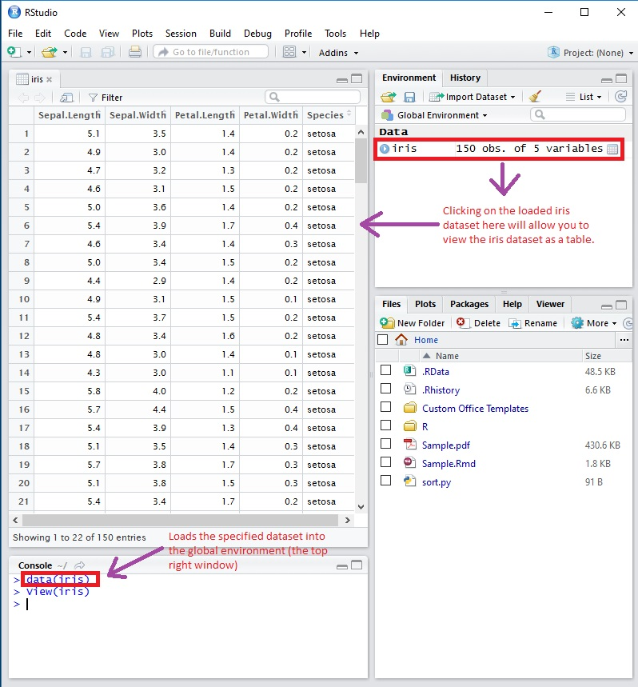
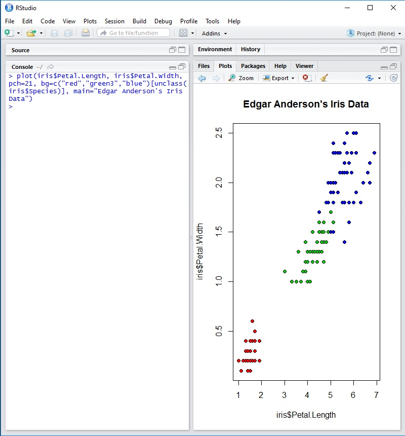

Why RStudio?
In technical terms, RStudio is a cross-platform integrated development environment (IDE) for the R
statistical language.
In layman terms, RStudio removes the headaches of keeping track of all the moving pieces when using
doing statistical analysis in R.
The main features we care about that make R so great are:
- The Docking Window / Graphical Workspace
- RMarkDown/Knitr Integration
The Docking Window/Graphical Workspace
To demonstrate what makes the RStudio interface so great, lets use an example:
We want to create a plot of the 'iris' dataset that comes included with R.
- Load dataset into R.
- After loading the dataset into R-studio we can immediately view the dataset in the IDE
itself, in an attached ("docked") window.

- We can easily view our dataset from the same window we are coding in. If we were
using a simple text editor, we would need to use some other application to view it.
- Let's do a scatter plot of petal length vs. petal width - associating a color with each of
the three flower types:
-
Again, thanks to the docking layout of RStudio, we can easily see the resulting plot
instantaneously, without having to locate a separate window or file.

-
In this course, you will often be plotting data and looking several datasets
simultaneously. RStudio allows you to easily navigate and refer to the elements of
your project.
RMarkdown / Knitr Integration
An additional benefit of RStudio is the ease of use with utilizing RMarkdown files and generating
polished pdfs. Allowing the user to mix code blocks with word processing functionality is a very
nice quality of life improvement. The importance of this will become apparent in your first
project.